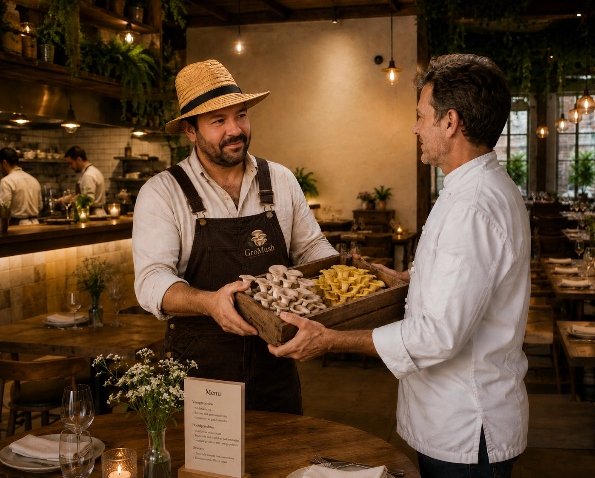
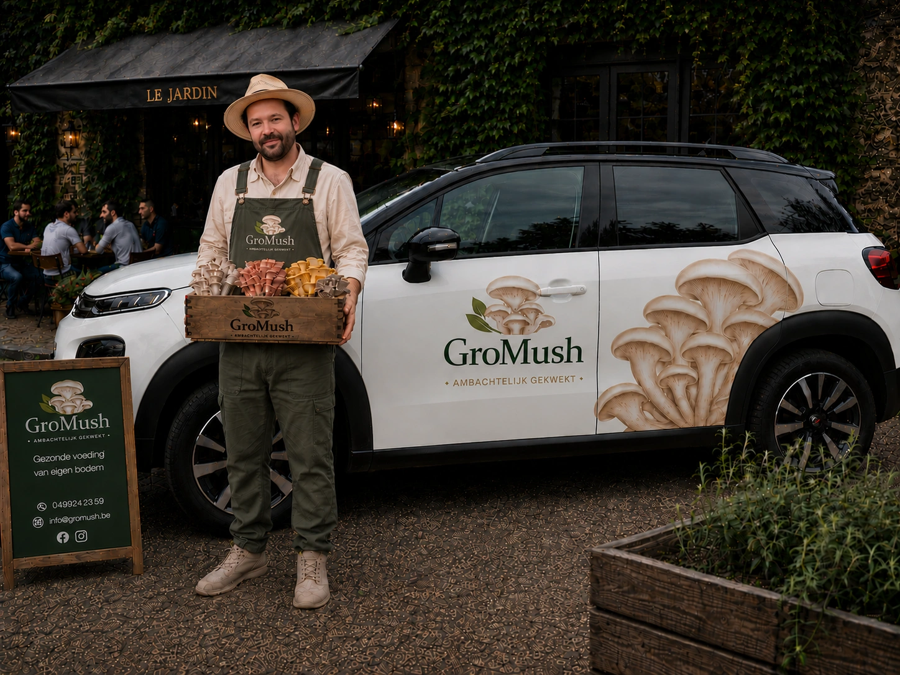
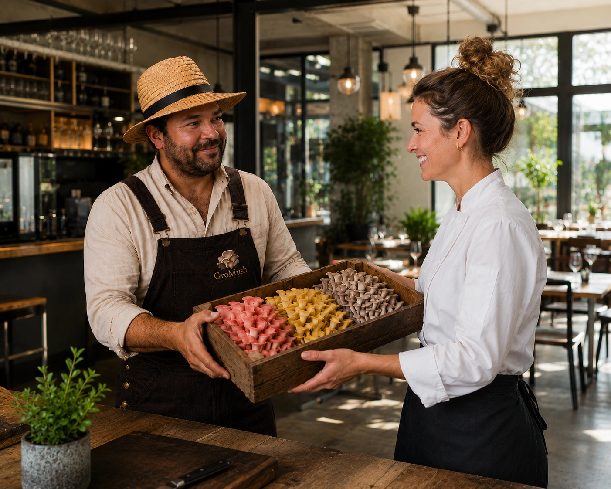
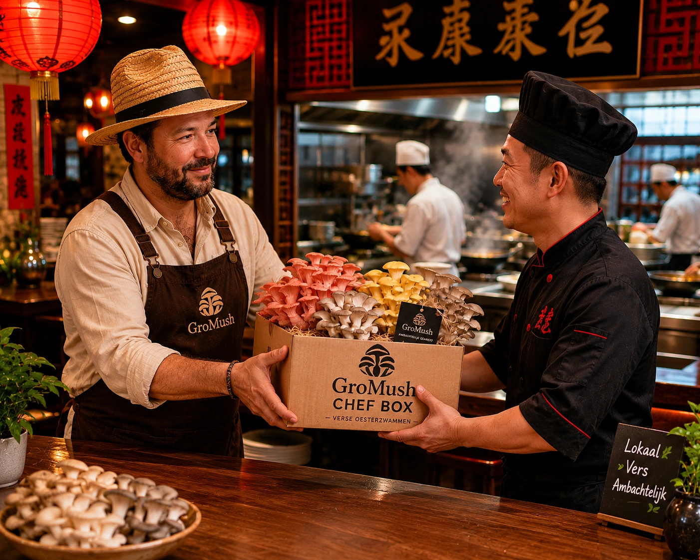

Van kwekerij tot chef-kok
Wij leveren oesterzwammen aan lokale chef-koks, restaurants en foodbars uit regio Knokke‑Damme‑Brugge, die onze vers gekweekte oesterzwammen gastronomisch verwerken in de keuken.
Bestel ChefBox
Het hele seizoen dagvers geleverd
Van de eerste tot de laatste oogst leveren wij ambachtelijk gekweekte oesterzwammen van constante topkwaliteit. Dankzij onze gespreide teelt kunnen restaurants en chef-koks van wekelijks tot maandelijks rekenen op een betrouwbare levering van gele, roze, grijze, witte en blauwe oesterzwammen — rechtstreeks uit onze kwekerij in Knokke‑Heist.
Onze oesterzwammenStap 1: proef een gratis proefbox
- 100 gr Grijze oesterzwam
- 100 gr Gele oesterzwam
- 100 gr Roze oesterzwam
- 100 gr Blauwe oesterzwam
- 100 gr Zomer oesterzwam

In regio Knokke‑Heist, Damme & Brugge


Word vandaag klant bij GroMush.
Start met een gratis proefbox en een proefperiode van 3 maanden, waarin we samen het ideale assortiment en leveringsritme bepalen. Bent u tevreden? Dan kiest u een ChefBox-formule — Basis, Select of Exclusief — op maat van uw aantal couverts, zodat uw keuken steeds kan rekenen op een constante aanvoer.
Bekijk de formules Hoe bestellen?



Rechtstreeks van kwekerij tot keuken
Als ondernemer bouw ik aan GroMush, een kleinschalige kwekerij waar ambacht, natuur en kwaliteit centraal staan. Bij GroMush telen we oesterzwammen met respect voor de natuur en met oog voor kwaliteit. Elke kweekcyclus volgen we van dichtbij op, van substraat tot oogst. Door bewust kleinschalig te werken kunnen we onze zwammen dagvers leveren aan chefs, winkels en particuliere liefhebbers.
Neem contactOnze kwekerij in Knokke‑Heist
Chefs verwachten kwaliteit. Daarom kiest GroMush voor kleinschalige, gecontroleerde teelt waarbij smaak en versheid centraal staan.
Bij GroMush worden onze oesterzwammen geteeld en gekweekt in Knokke‑Heist. Onze kweker Anthony Watteeuw levert persoonlijk aan restaurants, grootkeukens, hotels en particulieren in de buurt van Knokke‑Heist, Damme en Brugge.
Zo bent u verzekerd van een vers product, een rechtstreeks aanspreekpunt en een flexibele service die afgestemd is op de noden van uw keuken.